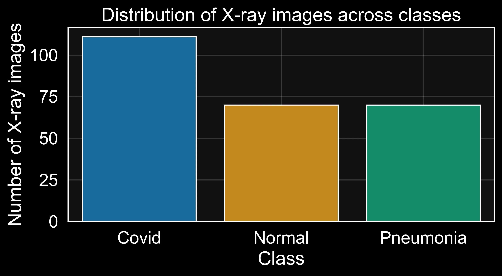
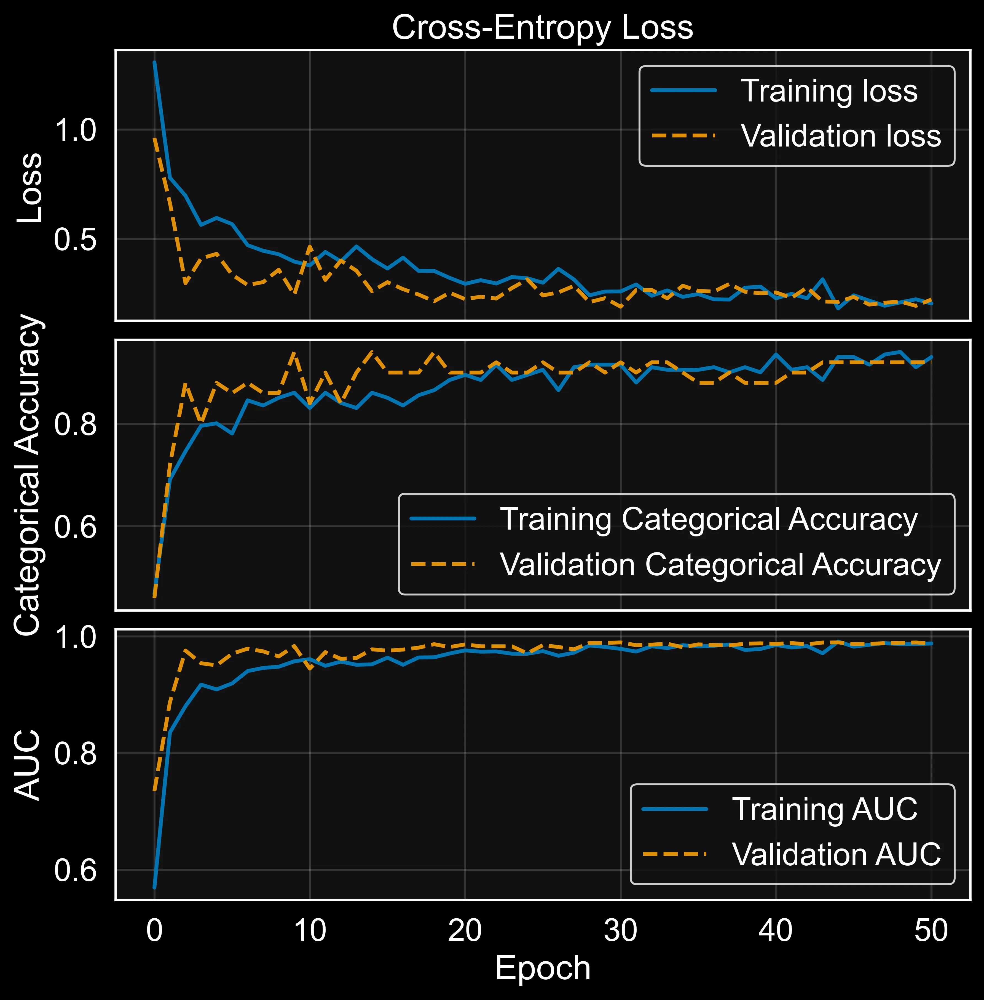
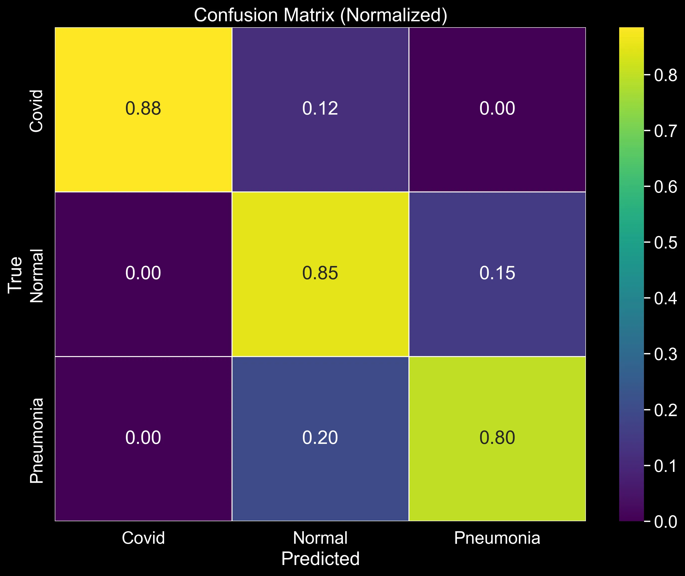

Do high classification scores mean the model learned the right features?
Medical image classification is many times presented as hitting the perfect score.
Although scoring high is very important for the use of model in a medical context,
it is not always the panacea. In my opinion, a neural model is truly useful in real-world settings only if its predictions are both accurate and explainable.
By accurate, I mean the model performs its task without errors.
By explainable, I mean it should be clear which features the model relies on to make its decisions.
The article below is mostly a reflection and a walk-through of my work
on a project. Even though, at the very beginning
of this project, my aim was to make a model that will score high, very quickly I realised
the importance also lies on explaining what makes the model good and even more importantly,
on what the model focusing on when making the prediction.
Problem to solve
The task was to classify chest X-rays into three categories: Covid, Normal, and Pneumonia.
The most important lesson of this project was not how to build a classifier. It was how quickly a convincing metric can stop being convincing once you inspect what the model is actually using.
Building the Baseline
Show Beside This Section
Figure: class distribution bar chart.
I always start by examining the dataset’s basic properties (see Figure 1). For neural network training, checking class imbalance is especially important. The class counts confirmed the dataset description: this is a multi-class classification task with grayscale chest X-rays.

The first pipeline was built around a small set of deliberate preprocessing decisions. Each one was chosen for a specific reason, not as a default.
- Reading images directly from the folder structure using Keras image generators. I do that to keep the pipeline reproducible and at the same time tightly coupled to the dataset's original layout.
- Resizing to 256 × 256 pixels. It is very important to keep a consistent spatial resolution before batching. At the same time, I need to preserce enough anatomical details while keeping memory and computation at a manageable level for a modest training setup.
- Batching with a small batch size of 8. Think of it like studying for an exam by reviewing a few flashcards at a time rather than the entire stack at once. Smaller groups keep the learning process a little unpredictable, which stops the model from taking too many shortcuts and forces it to generalise rather than memorise.
- Applying only rescaling in the data generators, then performing augmentation inside the model graph. This keeps the validation and test streams clean while still exposing the training path to meaningful stochastic variation.
Data Pipeline
from tensorflow.keras.preprocessing.image import ImageDataGenerator
# single generator for train/validation split: rescale only
train_val_generator = ImageDataGenerator(
rescale=1./255,
validation_split=0.2,
)
test_data_generator = ImageDataGenerator(rescale=1./255)
train_data_iter = train_val_generator.flow_from_directory(
directory="Covid19-dataset/train/",
class_mode='categorical',
color_mode='grayscale',
target_size=(256, 256),
batch_size=BATCH_SIZE,
seed=SEED,
shuffle=True,
subset='training'
)
validation_data_iter = train_val_generator.flow_from_directory(
directory="Covid19-dataset/train/",
class_mode='categorical',
color_mode='grayscale',
target_size=(256, 256),
batch_size=BATCH_SIZE,
seed=SEED,
shuffle=False,
subset='validation'
)
test_data_iter = test_data_generator.flow_from_directory(
directory="Covid19-dataset/test/",
class_mode='categorical',
color_mode='grayscale',
target_size=(256, 256),
batch_size=BATCH_SIZE,
seed=SEED,
shuffle=False,
)
In this setup, all iterators perform only rescaling — no augmentation in the generators. The training iterator uses shuffle=True for stochastic batching, while the validation and test iterators use shuffle=False so that prediction order aligns with the ground-truth labels. Augmentation is handled inside the model with Keras random layers, which are active only during model.fit() and automatically disabled during evaluation and prediction.
Architecture and training of the baseline model
The baseline architecture was intentionally compact: a small custom CNN with three convolutional stages, each using 3×3 convolutions2 and max-pooling3 for progressive spatial compression. The design is inspired by the small convnet patterns described in Chollet's Deep Learning with Python.8
Instead of heavy preprocessing in the iterator, I placed augmentation layers directly in the model graph. This way, random flips, rotations, translations, and zoom are applied only while fitting, and stay disabled during validation and testing.
I also used a single-channel input. Chest X-rays are greyscale, so a three-channel
RGB model would mean either duplicating the channel artificially or wasting two input
channels on zeros. Using (256, 256, 1) keeps the input honest.
Finally, the classification head is intentionally small (Flatten → Dropout → Dense(64) → Softmax) so the model remains a practical reference point, not peak performance.
Selected Code Snippet: Baseline Model
import tensorflow as tf
from tensorflow.keras.callbacks import EarlyStopping
model = tf.keras.Sequential([
tf.keras.layers.Input(shape=(256, 256, 1)),
# in-model augmentation (active only during training)
tf.keras.layers.RandomFlip("horizontal", seed=SEED),
tf.keras.layers.RandomRotation(15 / 360, seed=SEED),
tf.keras.layers.RandomTranslation(0.1, 0.1, seed=SEED),
tf.keras.layers.RandomZoom(0.1, 0.1, seed=SEED),
# convolutional backbone
tf.keras.layers.Conv2D(32, (3, 3), activation='relu', padding='valid'),
tf.keras.layers.MaxPooling2D((2, 2)),
tf.keras.layers.Conv2D(64, (3, 3), activation='relu', padding='valid'),
tf.keras.layers.MaxPooling2D((2, 2)),
tf.keras.layers.Conv2D(64, (3, 3), activation='relu', padding='valid'),
# classification head
tf.keras.layers.Flatten(),
tf.keras.layers.Dropout(0.5),
tf.keras.layers.Dense(64, activation='relu'),
tf.keras.layers.Dense(3, activation='softmax'),
])
model.compile(
optimizer=tf.keras.optimizers.Adam(learning_rate=1e-3),
loss=tf.keras.losses.CategoricalCrossentropy(),
metrics=[tf.keras.metrics.CategoricalAccuracy(), tf.keras.metrics.AUC(name='auc'), tf.keras.metrics.Precision(), tf.keras.metrics.Recall()]
)
print(model.summary())
early_stopping = EarlyStopping(
monitor='val_loss',
patience=20,
restore_best_weights=True
)
During training, I tracked more than categorical accuracy. I also monitored AUC, precision,
and recall. I trained with early stopping and ReduceLROnPlateau, then performed a one-shot
evaluation on the held-out test set after training completed. That matters in medical classification
because a model can look acceptable on one aggregate metric while collapsing on one class that matters clinically.

By inspecting Figure 2, the model shows the hallmarks of a healthy fit. Training and validation loss both decrease together from around 1.1 down to roughly 0.2 by epoch 50, with no diverging gap between them. There is some expected bounciness in validation loss during the first 10–15 epochs. In my opinion, unavoidable with a small dataset and mini-batch noise, but the two curves track each other closely from epoch 20 onward.
Categorical accuracy tells the same story. Training accuracy climbs from about 0.50 to 0.93, while validation accuracy rises in parallel and settles in the 0.88–0.93 range. Validation occasionally edges slightly above training, which is the expected fingerprint of in-graph augmentation: the model sees distorted images at training time but clean ones at validation time. The two curves meeting and staying together indicates the model is learning generalisable patterns rather than memorising the training set.
AUC climbs fastest of all three metrics, passing 0.95 within the first 10 epochs and saturating near 0.99 for both training and validation by epoch 20. The held-out test set confirm the whole behaviour: test accuracy of 0.85, test AUC of 0.95, and test loss of 0.43. The small drop from validation to test is normal sampling variability on a 66-image test set, not a generalisation failure. For a custom CNN trained from scratch on a few hundred images per class and on a 3-way task that includes the genuinely subtle Normal-versus-Pneumonia distinction, the performance of the baseline is actually very good to start with.
How Did the Baseline Model Perform?
After training, the baseline reached approximately 0.74 test accuracy, 0.56 test loss, and around 0.90 test AUC. This is clearly above random chance for a three-class task, so the model is learning useful signal. At the same time, the gap between accuracy and AUC suggests that class separation is better than final decision calibration. In practical terms: the baseline is informative, but still not reliable enough for high-confidence medical use.
Selected Code Snippet: Baseline Evaluation
test_data_iter.reset()
predictions = model.predict(test_data_iter)
predicted_classes = np.argmax(predictions, axis=1)
true_classes = test_data_iter.classes
class_labels = list(test_data_iter.class_indices.keys())
assert len(predicted_classes) == len(true_classes), (
"Prediction/label length mismatch - check that shuffle=False on test_data_iter."
)
report = classification_report(true_classes, predicted_classes, target_names=class_labels)
print(report)
cm = confusion_matrix(true_classes, predicted_classes)
sns.heatmap(
cm / cm.sum(axis=1, keepdims=True),
annot=True,
fmt=".2f",
cmap="viridis",
xticklabels=class_labels,
yticklabels=class_labels,
)
Looking at Figure 3 allows us to break down the performance class by class. From top to bottom:
Covid (row 1): The model correctly identifies 88% of Covid cases — the strongest result across all three classes. The remaining 12% are misclassified as Normal, and nothing leaks into Pneumonia. What does that zero mean? That the model is not confusing a Covid X-ray with a bacterial infection. It is worth noting that the 12% Covid-to-Normal confusion is not ideal in a medical context. However, for now I am only evaluating the baseline model and trying to gather as many insights as possible, which I will then use in the second article of this series to improve performance.
Normal (row 2): 85% of Normal cases are correctly identified. The concerning figure here is the 15% that get pushed into Pneumonia. A healthy patient being flagged as potentially ill is a false positive. In a medical context, that is not necessarily a critical failure, since it is generally better to follow up with additional tests rather than miss a condition. However, for the patients themselves, it can be stressful and costly. It is still a pattern worth tracking as the model is improved.
Pneumonia (row 3): This is where the model struggles most. Only 80% of true Pneumonia cases are caught, and 20% are misclassified as Normal. That is a false negative rate of one in five — meaning the model declares as "healty" almost 20% of the patients. In a real screening pipeline, that is the error type the model can least afford to make. Unlike the false positives discussed above, a missed Pneumonia diagnosis can be life-threatening.
Taken together, the picture is consistent with what the aggregate metrics already hinted at: the model has learned something useful, but it is not yet reliable enough across all classes. Covid is handled well; Pneumonia recall is the weak link. That asymmetry will guide what to improve next.
Conclusions
In this article, I built and evaluated a baseline CNN for chest X-ray classification across three classes: Covid, Normal, and Pneumonia. The aggregate metrics — 0.74 test accuracy and 0.90 test AUC — place the model clearly above random chance and confirm that it is picking up genuine signal from the X-rays. For a custom architecture trained from scratch on a small dataset, that is an honest and useful starting point.
The confusion matrix, however, tells a more sobering story. Covid is handled well at 88% recall, but Pneumonia tops out at only 80%. That means that one in five true Pneumonia cases is quietly sent into the Normal class. In a clinical screening context, that is precisely the error the model cannot afford to make. However, a missed Covid case is serious; a missed Pneumonia case in a fragile patient can be life-threatening. The aggregate accuracy hides this, which is exactly why reading the confusion matrix row by row is important in this case.
Before trying to fix those numbers, though, I think there is another important question to ask: "what is the model actually looking at?". In other words, what are the parts of the lungs that have the highest discriminative power between classes. This is important to figure it out because a model can score well for the wrong reasons. For instance, basing its prediction on irrelevant artefacts in the image rather than genuine anatomical features. If we add this one layer of explainability, we will already achieve something important: a good performance and an explanation of the performance as well as space to improve.
Comments
Have a question, disagree with an assumption, or want to suggest an improvement? Leave a comment below and I will reply.